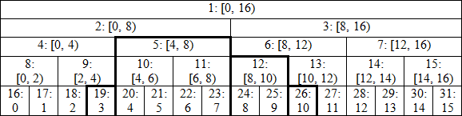

Cài đặt cây phân đoạn hiệu quả (Efficient and easy segment trees)
Nguồn: Codeforces - Efficient and Easy Segment Tree
Hầu hết các bạn tham gia vào các cuộc thi lập trình đều khá quen thuộc với cây phân đoạn, chẳng hạn qua bài viết này. Nếu chưa, bạn nên xem bài viết này trước, để so sánh cách thực hiện và chọn được cách tốt nhất cho mình.
Cập nhật từng phần tử riêng lẻ (single element modifications)¶
Cây phân đoạn được sử dụng khi chúng ta có một mảng \(A\), thực hiện các chỉnh sửa và truy vấn trên các đoạn liên tiếp. Ví dụ: ta có một mảng \(A\) với \(10^5\) phần tử và cần thực hiện \(Q\) thao tác, mỗi thao tác thuộc 1 trong 2 loại:
- Thay đổi giá trị của một phần tử: Gán \(A_i = v\).
- Tính tổng các phần tử trên đoạn bất kì: Tính \(A_l + A_{l+1} + ... + A_r\).
Cây nhị phân hoàn chỉnh (Perfect binary tree)¶
Ta cài đặt Segment Tree bằng một cây nhị phân hoàn chỉnh có dạng như sau:

Trong hình vẽ trên:
- Ta dùng ký hiệu Chỉ số nút: đoạn \([l, r)\) (ký hiệu đoạn chứa biên \(l\) và không chứa biên \(r\)).
- Tại hàng cuối lưu các phần tử của mảng (đánh số từ 0) là các lá của cây.
Giả sử độ dài của mảng là lũy thừa của 2 (như 16 trong ví dụ) thì ta được cây nhị phân hoàn chỉnh. Khi đi từ dưới lên ta ghép cặp nút có chỉ số \((2 \times i,2 \times i+1)\) và tổng hợp giá trị của chúng thành giá trị của nút cha có chỉ số \(i\). Bằng cách này, khi tính tổng đoạn \([3,11)\), ta chỉ cần cộng giá trị tại các nút 19,5,12 và 26 (các nút được in đậm) mà không cần phải cộng cả 8 giá trị trong đoạn. Cùng xem qua cách cài đặt (C++) dưới đây:
const int N = 1e5; // giới hạn của mảng
int n; // kích thước mảng
int t[2 * N];
void build() { // khởi tạo cây
for (int i = n - 1; i > 0; --i)
t[i] = t[i<<1] + t[i<<1|1];
}
void modify(int p, int value) { // gán giá trị tại vị trí p
for (t[p += n] = value; p > 1; p >>= 1)
t[p>>1] = t[p] + t[p^1];
}
int query(int l, int r) { // tính tổng đoạn [l, r)
int res = 0;
for (l += n, r += n; l < r; l >>= 1, r >>= 1) {
if (l&1) res += t[l++];
if (r&1) res += t[--r];
}
return res;
}
int main() {
scanf("%d", &n);
for (int i = 0; i < n; ++i) scanf("%d", t + n + i);
build();
modify(0, 1);
printf("%d\n", query(3, 11));
return 0;
}
Ở trên là một ví dụ đầy đủ các thao tác. Các hàm phức tạp được tóm tắt lại trong 5 mục dưới đây.
Cùng tìm hiểu cách chương trình hoạt động một cách rất hiệu quả
- Ta có thể thấy được trong hình, các lá được lưu tại những nút liên tiếp với chỉ số bắt đầu từ \(n\), phần tử thứ \(i\) tương ứng nút có chỉ số là \(i+n\). Do đó chúng ta có thể lưu mảng ban đầu trực tiếp vào cây đúng vị trí của từng phần tử.
- Trước khi thực hiện các truy vấn ta cần khởi tạo cây với độ phức tạp là \(O(n)\). Vì nút cha luôn có chỉ số nhỏ hơn các con của nó nên ta chỉ cần duyệt qua các nút theo thứ tự giảm dần. Phép biến đổi bit trong build() tương ứng với phép tính
t[i] = t[2*i] + t[2*i+1]. (Trong code trên dùng xử lý bit:t[i] = t[i<<1] + t[i<<1|1]). - Thay đổi giá trị của một phần tử cũng khá đơn giản tốn thời gian tỉ lệ với độ cao của cây, độ phức tạp là \(O(\log(n))\). Ta chỉ cần cập nhật giá trị tại các nút cha của nút đó. Do đó chỉ cần đi lên cây biết rằng cha của nút \(p\) là nút \(p/2\) (hay
p>>1). Phépp^1biến đổi \(2 \times i\) thành \(2 \times i+1\) hay ngược lại, đó là nút con còn lại của nút \(p\). - Tính tổng tốn độ phức tạp là \(O(log(n))\). Để hiểu rõ hơn tính logic của thuật toán bạn có thể thử với ví dụ đoạn \(\[3,11)\) và thấy rằng kết quả là tổng của các nút 19, 26, 12 và 5 (theo thứ tự). Ý tưởng chung là như sau:
- Nếu \(l\) (biên trái của đoạn) là lẻ (
if l&1) thì \(l\) là nút con phải của cha nó, cũng có nghĩa là đoạn cần truy vấn chứa nút \(l\) nhưng không chứa cha nó. Do đó ta cộngt[l]vào kết quả và nhảy đến nút bên phải của cha nút \(l\): \(l=(l+1)/2\). - Nếu \(l\) chẵn, nó là con bên trái của cha nó và đoạn cần truy vẫn cũng chứa cha nó (trừ khi đoạn bị giới hạn bởi biên phải), nên ta nhảy đến cha của nút \(l\): \(l=l/2\).
- Tương tự cho biên phải.
- Ta dừng khi 2 biên chạm nhau.
Đoạn code hoạt động hiệu quả mà không cần đệ quy hay các phép tính khác như tìm điểm chính giữa của đoạn. Ta chỉ cần duyệt qua và tính tổng các nút trong đoạn truy vấn.
Mảng kích thước bất kì (Arbitrary sized array)¶
Chúng ta đã đề cập đến các mảng có kích thước là luỹ thừa của 2, nên cây là cây nhị phân hoàn chỉnh. Phần tiếp theo có thể sẽ làm bạn hoang mang, chuẩn bị sẵn sàng nhé!
Đoạn code dưới đây áp dụng cho mảng có độ dài bất kì.
Phần giải thích sẽ phức tạp hơn, trước hết hãy xem qua những ưu điểm của của nó:
- Cây phân đoạn sử dụng bộ nhớ đúng \(2 \times n\), không phải \(4 \times n\) như một số cách cài đặt khác.
- Các phần tử của mảng được lưu trên đoạn liên tiếp bắt đầu từ chỉ số \(n\).
- Tất cả thao tác đều rất đơn giản và hiệu quả.
Bạn có thể bỏ qua đoạn giải thích này và xem code để thấy tính đúng đắn của nó. Nếu hứng thú với phần giải thích, đây là hình ảnh cây của mảng có kích thước \(n=13\):

Nó không phải là một cây đơn lẻ nữa, nhưng là tập các cây nhị phân bao gồm:
- Cây có gốc ở vị trí 2 với độ cao 4
- Cây có gốc ở vị trí 7 với độ cao 2
- Cây có gốc ở vị trí 12 với độ cao 2
- Cây có gốc ở vị trí 13 với độ cao 1.
Các vị trí có dấu gạch không bao giờ được sử dụng để truy vấn nên giá trị được lưu tại các nút đó không quan trọng.
Các lá có độ cao khác nhau nhưng ta có thể sửa lại bằng cách cắt cây ngay trước vị trí \(13\) và chuyển phần phía bên phải sang bên trái. Khi đó, ta thu được cấu trúc mới có dạng giống như cây nhị phân đầy đủ (nếu chỉ quan tâm đến những thao tác ta cần thực hiện). Vì vậy độ phức tạp tương đương với độ phức tạp trên một cây nhị phân đầy đủ.
Chúng ta thử xét với đoạn \([0,7)\): Ta có \(l=13\), \(r=20\)
- Ở lần lặp đầu:
l&1, nên ta cộngt[13]vào kết quả- Gán \(l=7\)
- Gán \(r=10\).
- Ở lần lặp thứ 2:
l&1, nên ta cộngt[7]vào kết quả- Gán \(l=4\)
- Gán \(r=5\)
- Lúc này các nút đã ở cùng một độ cao.
- Ở lần lặp thứ 3:
r&1=> cộngt[4](--r = 4)- Gán \(l=2\), \(r=2\) và dừng lại.
Chỉnh sửa trên đoạn, truy cập từng các phần tử lẻ (Modification on interval, single element access)¶
Một số người gặp khó khăn và nghĩ một cách phức tạp khi đảo các thao tác, ví dụ như:
- cộng một giá trị vào tất cả phần tử trong đoạn
- tính giá trị của một phần tử bất kì
Tất cả những gì chúng ta phải làm trong trường hợp này là đổi đoạn code modify và query như sau:
void modify(int l, int r, int value) {
for (l += n, r += n; l < r; l >>= 1, r >>= 1) {
if (l&1) t[l++] += value;
if (r&1) t[--r] += value;
}
}
int query(int p) {
int res = 0;
for (p += n; p > 0; p >>= 1)
res += t[p];
return res;
}
Nếu sau khi thực hiện tất cả các thao tác chỉnh sửa, ta muốn tính giá trị từng phần tử của dãy, ta có thể đẩy các thao tác chỉnh sửa xuống các nút lá bằng đoạn code dưới đây. Sau khi thực hiện ta chỉ cần duyệt qua các phần tử được đánh số bắt đầu từ \(n\). Bằng cách này chúng ta đã giảm độ phức tạp từ \(\mathcal{O}(n\log{n})\) còn \(\mathcal{O}(n)\) khi sử dụng build thay vì \(n\) thao tác chỉnh sửa.
void push() {
for (int i = 1; i < n; ++i) {
t[i<<1] += t[i];
t[i<<1|1] += t[i];
t[i] = 0;
}
}
Chú ý: Đoạn code trên không thể dùng được trong trường hợp thứ tự các thao tác chỉnh sửa trên 1 phần tử ảnh hưởng đến kết quả. Ví dụ: phép gán giá trị cho 1 đoạn phần tử. Phần này sẽ được trình bày ở phần lazy propagation.
Hàm kết hợp không có tính giao hoán (Non-commutative combiner functions)¶
Chúng ta thử xét phép kết hợp đơn giản nhất là phép cộng. Phép cộng có tính giao hoán nghĩa là thứ tự thực hiện các phép tính không quan trọng, ta có \(a+b=b+a\). Hàm lấy max và min cũng có tính chất tương tự, chỉ thay thế các phép + bằng một trong hai hàm trên và ta sẽ có kết quả. Nhưng chú ý phải khởi tạo các giá trị ban đầu thành vô cực thay vì 0.
Tuy nhiên, có một số trường hợp mà phép kết hợp không có tính giao hoán, ví dụ như trong bài 380C - Codeforces, xem phân tích ở Bài viết về Segment Tree. May mắn là cách làm của ta vẫn có thể hỗ trợ phép kết hợp trong bài trên. Ta định nghĩa cấu trúc Node và toán tử + như trong bài viết trên. Trong thủ tục build ta dùng toán tử + mới định nghĩa này. Trong modify, ta cần đảm bảo thứ tự đúng của các nút con, biết rằng các nút con trái có chỉ số chẵn. Khi truy vấn kết quả, ta lưu ý là các nút tương ứng với nút biên trái sẽ dịch từ trái sang phải, trong khi biên phải dịch từ phải sang trái. Đoạn code như sau:
void modify(int p, const Node& value) {
for (t[p += n] = value; p >>= 1;)
t[p] = t[p<<1] + t[p<<1|1];
}
Node query(int l, int r) {
Node resl, resr;
for (l += n, r += n; l < r; l >>= 1, r >>= 1) {
if (l&1) resl = resl + t[l++];
if (r&1) resr = t[--r] + resr;
}
return resl + resr;
}
Cập nhật đoạn (Lazy propagation)¶
Tiếp theo, chúng ta tìm hiểu về một kĩ thuật dùng để thực hiện cả truy vấn trên đoạn và chỉnh sửa trên đoạn. Đầu tiên ta cần định nghĩa thêm biến:
int h = sizeof(int) * 8 - __builtin_clz(n);
int d[N];
\(h\) là độ cao của cây và là bit cao nhất trong \(n\). d[i] là thao tác được lưu lại để truyền cho các nút con của nút \(i\) khi cần thiết (xem ví dụ để hiểu rõ hơn, hoặc đọc thêm Lazy Propagation trong bài viết về Segment Tree). Kích thước của mảng là \(N\) vì ta không cần lưu thông tin này tại các nút lá (do các nút lá không có con). Do đó ta cần tất cả là \(3 \times N\) bộ nhớ sử dụng.
Ở trên ta nói t[i] là giá trị tương ứng với đoạn của nó. Nhưng bây giờ điều này không hoàn toàn đúng:
- Ta phải thực hiện các thao tác được lưu lại vào
d[i]trên đường đi từ nút \(i\) đến gốc của cây (tổ tiên của nút \(i\)). - Khi cài đặt, ta giả sử là giá trị tại
t[i]đã bao gồmd[i], nên đường đi bắt đầu từ cha của \(i\).
Quay trở lại ví dụ đầu tiên với đoạn \([3,11)\), nhưng bây giờ ta sẽ chỉnh sửa tất giá trị của tất cả phần tử trong đoạn. Để làm điều này, ta sẽ chỉnh sửa t[i] và d[i] tại các nút: 19, 5, 12 và 26.
Sau đó, khi cần tìm giá trị ở một nút, ví dụ như nút 22, ta cần phải truyền các chỉnh sửa từ nút 5 xuống. Chú ý rằng những thay đổi có thể ảnh hưởng đến các giá trị t[i] trên cây như sau: nút 19 ảnh hưởng đến nút 9, 4, 2 và 1; nút 5 ảnh hưởng đến nút 2 và 1. Lập luận tiếp theo rất quan trọng đến độ phức tạp của các thao tác chỉnh sửa:
Chỉnh sửa trên đoạn \([l,r)\) chỉ ảnh hưởng giá trị t[i] của các nút cha của nút lá ở biên: l+n và r+n-1 (ngoại trừ các giá trị lưu chính đoạn của nó - những giá trị duyệt đến trong vòng lặp for).
Chứng minh
- Khi duyệt biên trái, các nút ta chỉnh sửa trong vòng lặp luôn là con phải của cha nó. Do đó tất cả các chỉnh sửa trước đó đều là trên cây con của nút trái của nút cha. Nói cách khác ta có thể duyệt nút cha thay vì cả hai con của nó. Điều này có nghĩa là cha trực tiếp hiện tại cũng là cha của lá
l+n. - Chứng minh tương tự cho biên phải.
Mời các bạn cùng xem qua những ví dụ cụ thể.
Tăng giá trị phần tử, truy vấn tìm giá trị max (Increment modifications, queries for maximum)¶
Đây có lẽ là trường hợp đơn giản nhất. Code dưới đây không phổ biến và không phải là cách tối ưu nhất, nhưng là một cách tốt để bắt đầu.
void apply(int p, int value) {
t[p] += value;
if (p < n)
d[p] += value;
}
void build(int p) {
while (p > 1) {
p >>= 1;
t[p] = max(t[p<<1], t[p<<1|1]) + d[p];
}
}
void push(int p) {
for (int s = h; s > 0; --s) {
int i = p >> s;
if (d[i] != 0) {
apply(i<<1, d[i]);
apply(i<<1|1, d[i]);
d[i] = 0;
}
}
}
void inc(int l, int r, int value) {
l += n, r += n;
int l0 = l, r0 = r;
for (; l < r; l >>= 1, r >>= 1) {
if (l&1) apply(l++, value);
if (r&1) apply(--r, value);
}
build(l0);
build(r0 - 1);
}
int query(int l, int r) {
l += n, r += n;
push(l);
push(r - 1);
int res = -2e9;
for (; l < r; l >>= 1, r >>= 1) {
if (l&1) res = max(res, t[l++]);
if (r&1) res = max(t[--r], res);
}
return res;
}
Tìm hiểu lần lượt từng thủ tục một. Ba thủ tục đầu tiên không thực sự cần phải biết:
- Mỗi nút chứa 2 biến, rất hữu ích khi viết một thủ tục apply những thay đổi cho cả hai. \(p<n\) để kiểm tra \(p\) không phải là lá. Một tính chất quan trọng là các thao tác khi chúng ta cùng tăng giá trị của các phần tử trong một đoạn thì giá trị max cũng tăng tương ứng.
- build cập nhật tất cả các cha của nút cho trước.
- push truyền tất cả các thay đổi từ tất cả nút cha của nút hiện tại xuống bắt đầu từ gốc. Những nút cha là tiền tố trong biểu diễn nhị phân của của \(p\), do đó ta dùng phép dịch bit để tính toán.
Tiếp theo là những thủ tục chính:
- Như đã giải thích ở trên, ta thực hiện các thay đổi vòng lặp quen thuộc để cập nhật tất cả và thêm một việc là gọi hàm build.
- Để trả lời truy vấn, ta cũng sử dụng vòng lặp như cũ, tuy nhiên trước đó cần phải đẩy các thay đổi đến những nút sẽ được sử dụng. Tương tự như build, như vậy là đủ để đẩy các thay đổi từ các nút cha của những nút lá ở biên.
Dễ dàng nhận thấy tất cả các thao tác trên tốn độ phức tạp \(O(log(n))\).
Đây là trường hợp đơn giản nhất vì 2 lý do:
- thứ tự các thay đổi không làm ảnh hưởng kết quả.
- khi cập nhật một nút, ta không cần biết độ dài của đoạn nó đại diện.
Tiếp theo ta sẽ ứng dụng các phương pháp trong một ví dụ tiếp theo.
Gán giá trị mới cho phần tử, truy vấn tổng (Assignment modifications, sum queries)¶
Ví dụ này dựa trên Timus 2042
Chúng ta lại bắt đầu từ các hàm trợ giúp. Ở đây ta có nhiều hàm hơn:
void calc(int p, int k) {
if (d[p] == 0) t[p] = t[p<<1] + t[p<<1|1];
else t[p] = d[p] * k;
}
void apply(int p, int value, int k) {
t[p] = value * k;
if (p < n) d[p] = value;
}
Đây là những hàm đơn giản có độ phức tạp \(O(1)\) dùng để tính giá trị tại nút \(p\) và thực hiện một thay đổi cho nút. Có 2 điều cần giải thích:
- Ta kiểm tra
d[p] == 0vì 0 là một giá trị mà không bao giờ được dùng trong các thay đổi. Trong trường hợp không có giá trị nào như vậy, ta buộc phải dùng thêm mảng đánh dấu. - Ta có thêm một tham số \(k\), chứa độ dài của đoạn thuộc nút \(p\). Tham số \(k\) sẽ được giữ nguyên ý nghĩa trong cả đoạn code. Có thể nhận thấy ta không thể tính tổng nếu không có tham số này. Ta có thể tính trước giá trị \(k\) cho tất cả các nút hay suy ra từ chỉ số của nút trên đường đi, nhưng ta sẽ tìm hiểu một cách khác không cần phải sử dụng thêm bộ nhớ hay tính toán.
Tiếp theo ta cần chỉnh sử lại build và push. Lưu ý rằng ta đang có 2 phiên bản: một được giới thiệu trước duyệt qua toàn bộ cây trong \(O(n)\), một được sử dụng trong ví dụ trước mà chỉ duyệt các nút cha của một nút là trong \(O(log(n))\). Ta có thể dễ dàng tích hợp thêm các chức năng mới vào cùng một thủ tục.
void build(int l, int r) {
int k = 2;
for (l += n, r += n-1; l > 1; k <<= 1) {
l >>= 1, r >>= 1;
for (int i = r; i >= l; --i) calc(i, k);
}
}
void push(int l, int r) {
int s = h, k = 1 << (h-1);
for (l += n, r += n-1; s > 0; --s, k >>= 1)
for (int i = l >> s; i <= r >> s; ++i) if (d[i] != 0) {
apply(i<<1, d[i], k);
apply(i<<1|1, d[i], k);
d[i] = 0;
}
}
Cả hai thủ tục này thực hiện trên đoạn bất kỳ với đô phức tạp \(O(log(n)+\|r-l\|)\). Nếu muốn biến đổi một đoạn trên cây, ta có thể viết như sau:
push(l, r);
... // thức hiện bất kì thứ gì lên các phần tử trong đoạn [l, r)
build(l, r);
Cùng tìm hiểu cách hoạt động. Trước tiên, chú ý là ta đã thay đổi thành đoạn \([l,r)\) thành \([l,r]\) khi thực hiện r+=n-1 để tính chính xác các nút cha. Do ta duyệt cây theo từng tầng, nên có thể dễ dàng duy trì độ dài của đoạn hiện tại, luôn luôn là lũy thừa của \(2\). build đi từ dưới lên trên, do đó ban đầu khởi tạo \(k=2\) (không phải 1 vì ta không tính tại nút lá nhưng bắt đầu từ cha trực tiếp của nó) và nhân đôi \(k\) tại mỗi tầng. push đi từ trên xuống dưới, do đó giá trị ban đầu của \(k\) phụ thuộc vào độ cao của cây và bị chia \(2\) sau mỗi tầng.
Các thủ tục chính không thay đổi nhiều so với ví dụ trước, nhưng modify có 2 điều đáng chú ý:
- Do thứ tự của các phép biến đổi là quan trọng, ta cần phải đảm bảo không có những thay biến đổi cũ trên đường đi từ gốc đến tất cả các nút mà ta sẽ cập nhật. Điều này được thực hiện khi gọi push đầu tiên trong query.
- Ta cần phải duy trì giá trị của \(k\).
void modify(int l, int r, int value) {
if (value == 0) return;
push(l, l + 1);
push(r - 1, r);
int l0 = l, r0 = r, k = 1;
for (l += n, r += n; l < r; l >>= 1, r >>= 1, k <<= 1) {
if (l&1) apply(l++, value, k);
if (r&1) apply(--r, value, k);
}
build(l0, l0 + 1);
build(r0 - 1, r0);
}
int query(int l, int r) {
push(l, l + 1);
push(r - 1, r);
int res = 0;
for (l += n, r += n; l < r; l >>= 1, r >>= 1) {
if (l&1) res += t[l++];
if (r&1) res += t[--r];
}
return res;
}
Để ý ta thấy ta thực hiện 3 lần đi trong modify gần như trên cùng các nút: 1 đi xuống dưới cây trong push, rồi 2 đi lên cây. Ta có thể bỏ lần cuối cùng chỉ và tính các giá trị mới khi cần thiết, nhưng code sẽ trở nên phức tạp hơn:
void modify(int l, int r, int value) {
if (value == 0) return;
push(l, l + 1);
push(r - 1, r);
bool cl = false, cr = false;
int k = 1;
for (l += n, r += n; l < r; l >>= 1, r >>= 1, k <<= 1) {
if (cl) calc(l - 1, k);
if (cr) calc(r, k);
if (l&1) apply(l++, value, k), cl = true;
if (r&1) apply(--r, value, k), cr = true;
}
for (--l; r > 0; l >>= 1, r >>= 1, k <<= 1) {
if (cl) calc(l, k);
if (cr && (!cl || l != r)) calc(r, k);
}
}
Biến boolean dùng để đánh dấu xem ta đã thực hiện biến đổi nào ở bên trái và ở bên phải. Xem một ví dụ:

Gọi modify trên \([4,13)\):
- \(l=20, r=29\), gọi apply(28);
- \(l=10, r=14\), gọi calc(14) - nút đầu tiên về bên phải của đoạn hiện tại chính là cha của nút được biến đổi cuối cùng;
- \(l=5, r=7\), gọi calc(7) và tiếp đó là apply(5) và apply(6);
- \(l=3, r=3\), vòng lặp đầu tiên kết thúc.
Bây giờ bạn có thể hiểu lý do thực hiện --l, vì ta vẫn cần phải tính giá trị mới tại các nút 2, 3 và 1. Điều kiện kết thúc là r>0 bởi vì có thể \(l=1, r=1\) sau vòng lặp đầu tiên, do đó ta cần phải cập nhật cho gốc, nhưng --l dẫn đến \(l=0\).
So sánh với cách thực hiện cũ, ta đã giảm được những lần gọi không cần thiết calc(10), calc(5) và lặp calc(1).